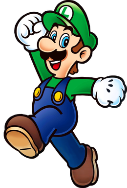

Luigi is a character created by Japanese video game designer Shigeru Miyamoto. Part of Nintendo's Mario franchise, he is a kind-hearted, cowardly Italian plumber, and the younger fraternal twin brother and sidekick of Mario. Like his brother, Luigi's distinctive characteristics include his large nose and mustache, overalls, green hat, and high-pitched, exaggerated Italian accent.
While he may seem less brave than his older brother, Luigi does share the same itch to do what's right for others. Also, due to his more careful nature, he is the more observant of the Mario Bros. He would be the kind of ruler to carefully assess situations and see the right solutions for various issues. He also knows how to handle money pretty well, due to his past of investing funds into various properties and having success in the venture. His kind nature would also do well to bring comfort to the people, and he would insure that the people under him are addressed and taken care of.
To learn more about Luigi, click here: https://en.wikipedia.org/wiki/Luigi_(character)

If Luigi were to be declared ruler, he would have specific goals in mind for his rule. One such goal would be to push for more environmental protection, whether it be developing new services and jobs to work towards that, or creating new policies and laws to encourage protecting the environment. Luigi would also strive for more affordable housing, especially for those who may struggle in finding a place to live. Finally, he would strive for more equality reforms, as he is a believer of equal rights for all, regardless of race or gender.